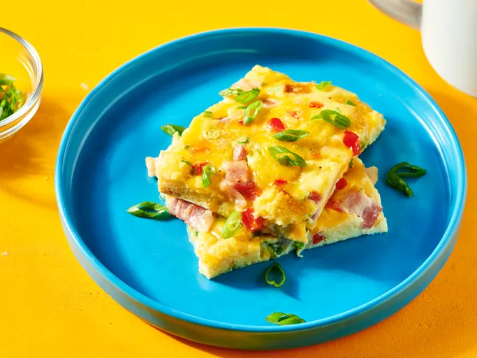

This recipe is so versatile; you can use other veggies such as red onion or mushrooms, almond milk instead of regular milk, any cheese instead of Cheddar, and ham or cooked breakfast sausage instead of bacon.
If you plan to freeze the egg casserole, go ahead and bake it in a foil baking dish. Wrap the whole thing in one layer of storage wrap, then one layer of aluminum foil. Freeze for up to three months.